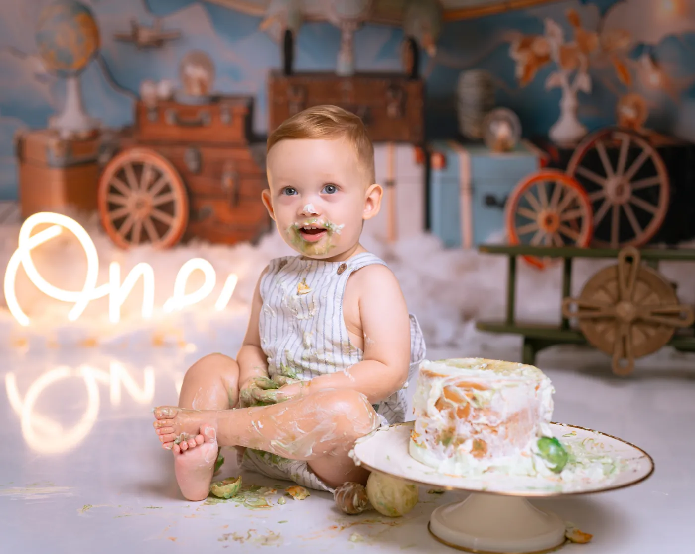
1 jaarCake smash
Eerst lekker snoepen van de taart, daarna heerlijk spetteren in het badje. De leukste manier om de eerste verjaardag te vieren.
Plan de eerste verjaardagDie kleine lachjes, de spontane knuffels, de manier waarop ze naar je kijken. In mijn studio in Leuven leg ik ze vast: een cake smash voor de eerste verjaardag, een volledig uitgewerkte themaset of een warme gezinsfoto.
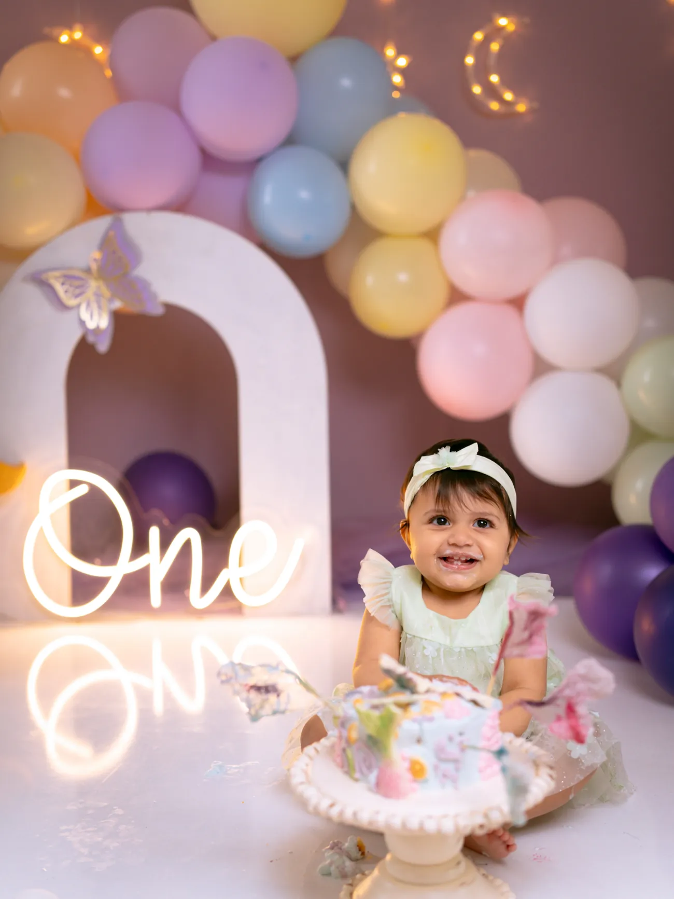
Cake smash, verjaardagsconcepten tot vier jaar, gezinsfoto's, newborn en zwangerschap. Alles in de studio, waar het warm en rustig is.

1 jaarEerst lekker snoepen van de taart, daarna heerlijk spetteren in het badje. De leukste manier om de eerste verjaardag te vieren.
Plan de eerste verjaardag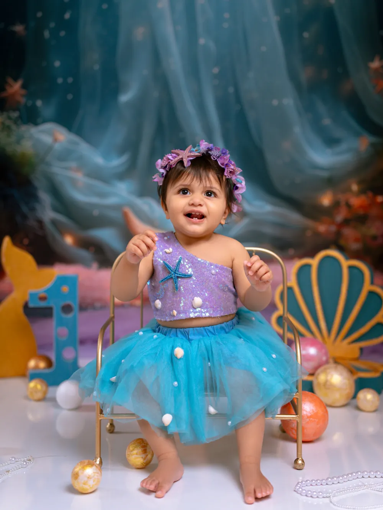
1 tot 4 jaarNiet alleen cake smash. Voor elke leeftijd tot vier jaar staat er een eigen studioset klaar, tot in de kleinste details.
Bekijk de sets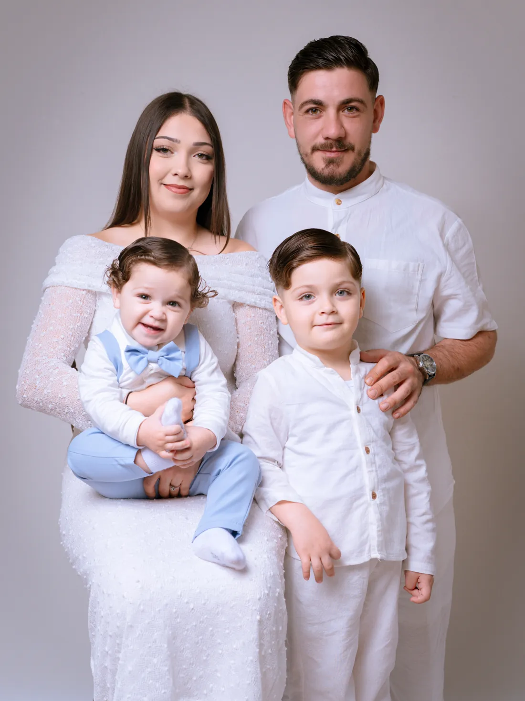
GezinJullie gezin precies zoals jullie zijn: spontaan, warm en vol vreugde. In een ontspannen sessie waar niemand stijf moet poseren.
Plan een gezinsshootEen ruimtereis, een aardbeientuin of een snoephuisje. Elke set is vooraf tot in de details uitgedacht, jullie kiezen welke wereld bij jullie kleintje past.
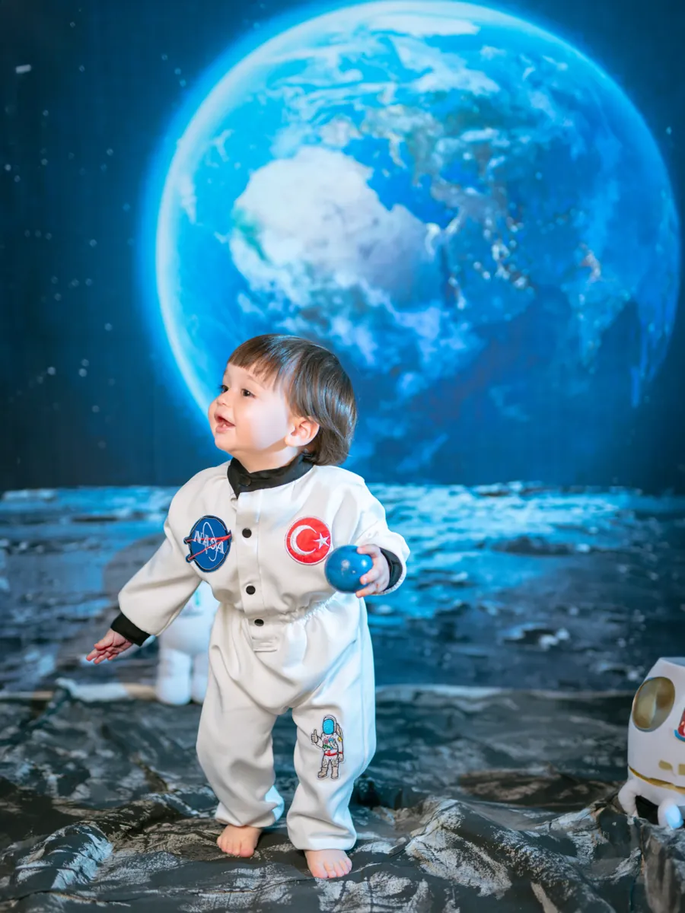
naar de maan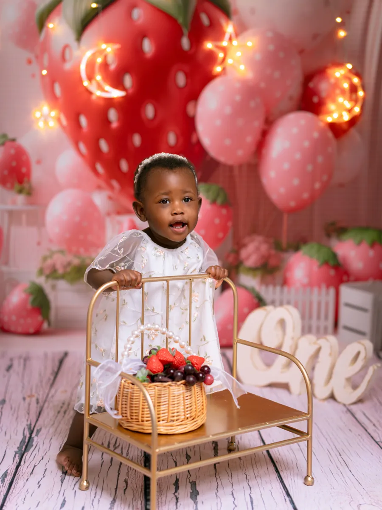
aardbeientuin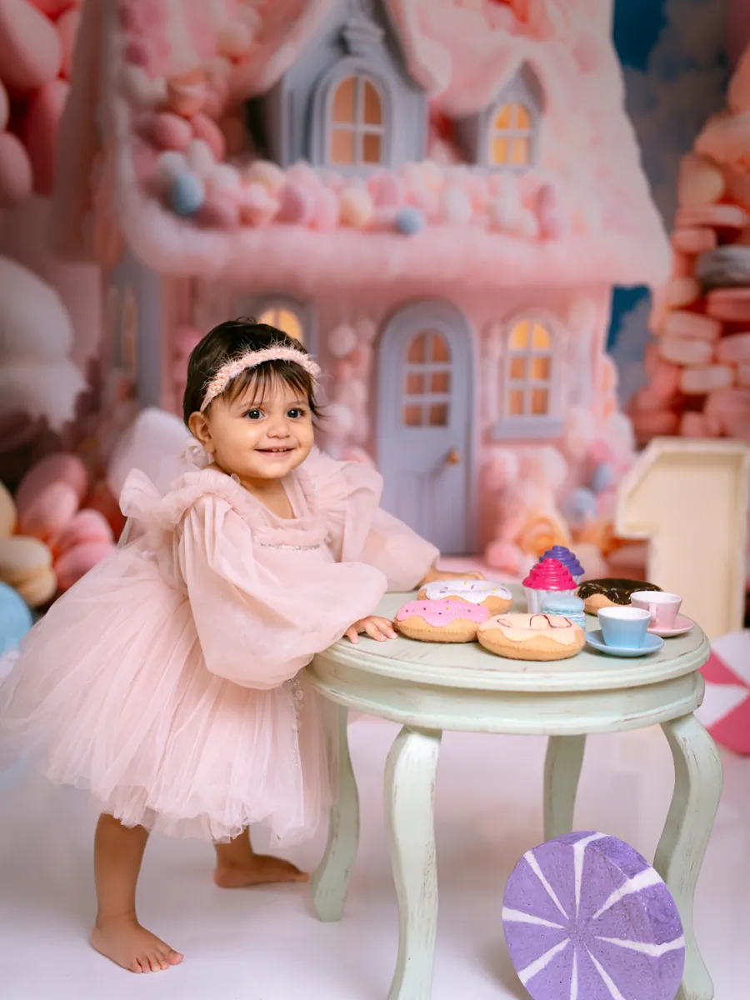
snoephuisje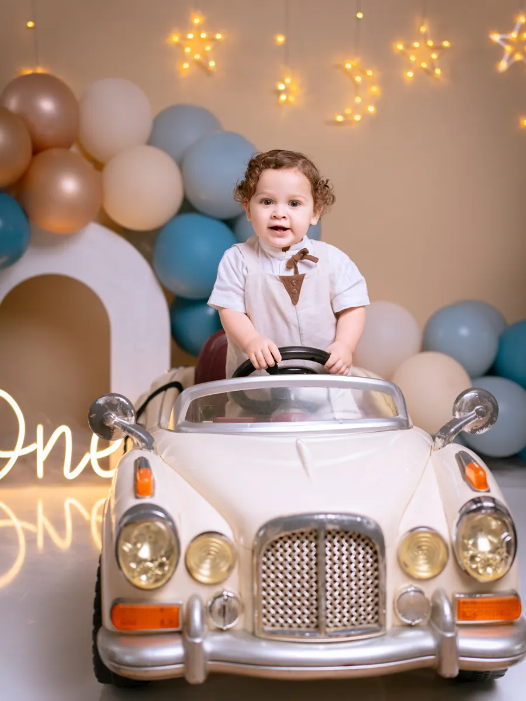
klaar voor de start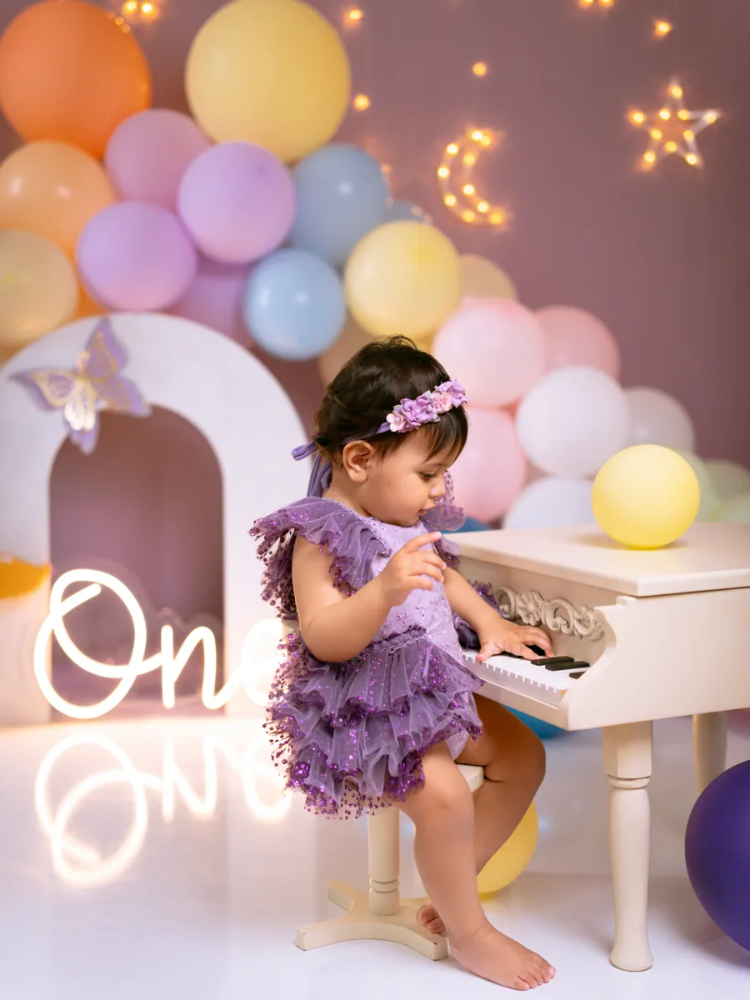
pianootje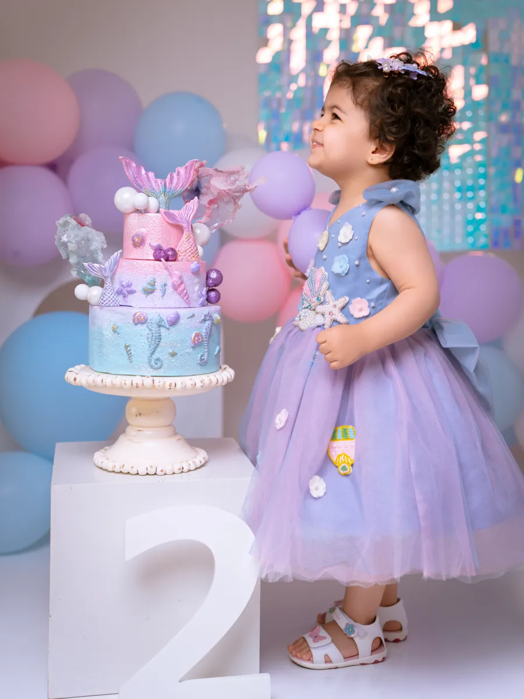
kleine zeemeerminDe taart in de set is een dummytaart, zo kan je kleintje vrij poseren zonder vlekken op het kleedje.
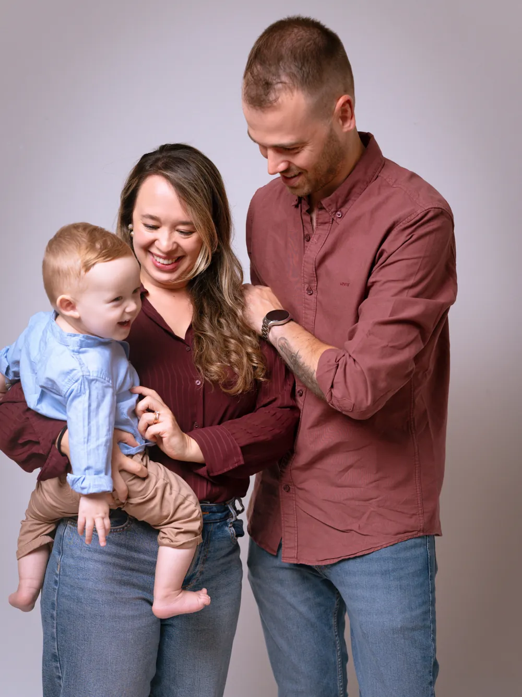
Een shoot met een baby of peuter loopt nooit volgens een strak schema. Daarom neem ik de tijd, zodat jullie kleintje op zijn gemak is.
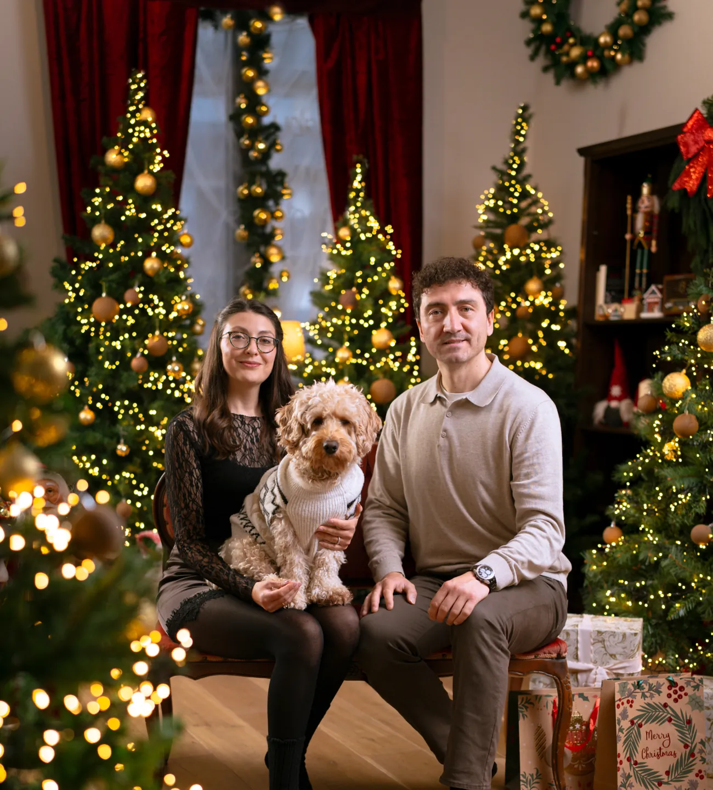
Kerstbomen, lichtjes, kransen en cadeautjes onder de boom. Kom met het hele gezin, en ja, de hond mag mee. Een warme kerstfoto om op de kaart te zetten of gewoon om te koesteren.
De plaatsen zijn beperkt, de agenda loopt volEcht een aanrader! Ze heeft een prachtig geduld met baby's en weet precies de juiste momenten vast te leggen. De foto's zijn van topkwaliteit en we hebben nu herinneringen voor het leven. Bedankt voor de geweldige ervaring!
Wat een geweldige ervaring! Ze heeft echt een oog voor detail en wist onze baby op de meest natuurlijke manier vast te leggen. De sfeer in de studio was zo rustgevend dat we ons meteen op ons gemak voelden. Het resultaat is magisch. Ontzettend bedankt!
Ben zeer tevreden over de babyschoot en de familiale sfeer in de studio 👌🏻 De foto's zijn van top kwaliteit en ze zijn nog niet eens bewerkt laat staan na de bewerking. Ik raad u aan om uw waardevolle momenten met hun vast te leggen!
Stuur me de leeftijd van je kleintje en welke shoot je in gedachten hebt. Ik laat je weten welke dagen nog vrij zijn en welke sets er klaarstaan.
Ik maakte deze demo voor jullie om te tonen wat er kan. Na een kort gesprek maak ik er iets veel persoonlijkers van, helemaal naar jullie wens.
Vrijblijvend. Ik kom langs of we bellen.
Op maat, op jullie eigen domein.
Geen voorschot. Jullie betalen pas als alles klaar is.
Hosting, domeinnaam en kleine wijzigingen, zoals nieuwe openingsuren.
Omdat een voorbeeld meer zegt dan een mail. Zo zien jullie meteen wat er kan, en het kost jullie niets.
Nee. Het gesprek is vrijblijvend. Vinden jullie het niks, dan is het daarmee gedaan.
Na ons gesprek staat jullie site binnen 10 tot 14 dagen online.
Zeker. Jullie domeinnaam kan gewoon blijven, de nieuwe site komt in de plaats van de oude.
Nee, dat doe ik op basis van ons gesprek. Eigen foto's zijn mooi meegenomen, maar niet nodig om te starten.